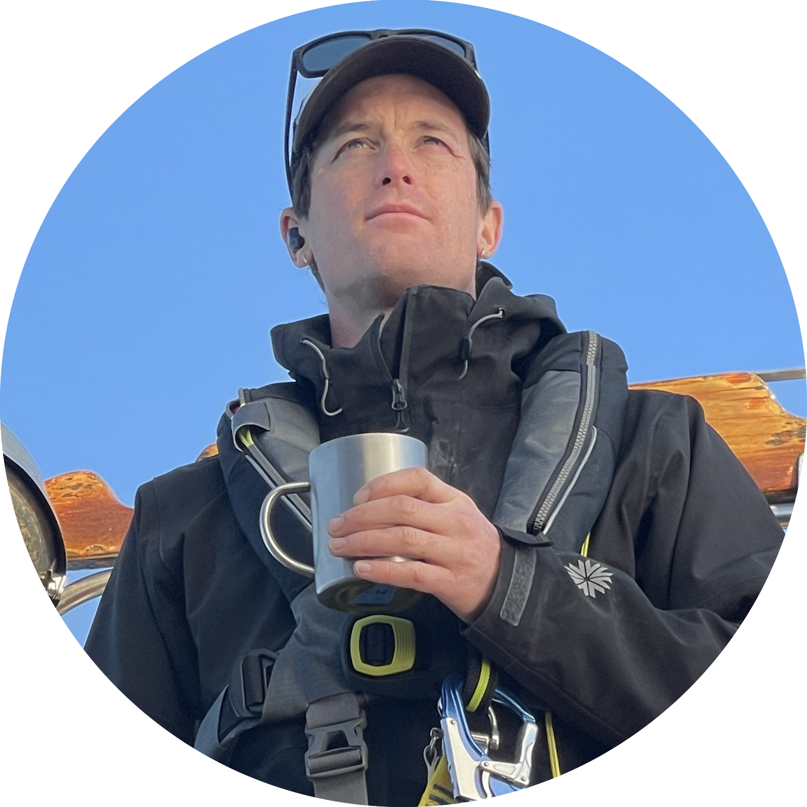

Micah Conkling, P.S.M.
Transdisciplinary ocean food systems research - Maine, USA
Current research:
"Has the LPA system been successful? Small-scale marine aquaculture recruitment in Maine through the limited-purpose aquaculture (‘LPA’) licensing system”
Project and research areas I am seeking:
- Marine aquaculture recruitment
- Small- and medium-scale mariculture leasing
- Medium- and large-scale marine algae development
Here is my resume.

© 2022, Micah Conkling, Maine, USA